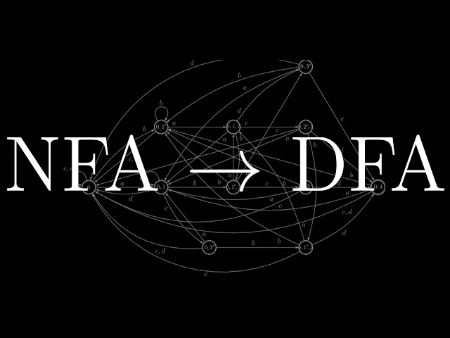

This tool converts a Non-Deterministic Finite Automaton (NFA) into an equivalent Deterministic Finite Automaton (DFA) using the subset construction algorithm. It also shows step-by-step conversion, transition table, and graphical representation of both automata.
Below is a sample NFA graph along with its corresponding inputs. Use this format to enter your own NFA correctly.
Start State: q0
Final States: q2
Transitions:
q0,0=q0,q1
q0,1=q0
q1,0=q2
q2,1=q2
Initial state where the automaton starts computation
Example: q0
Accepting states of the NFA (comma separated)
Example: q1, q2
Format: Present State,input=Next States
Example: q1,1=q1,q2